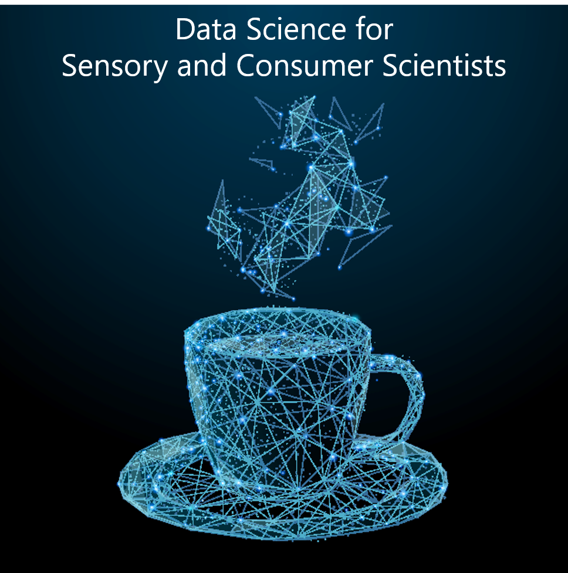
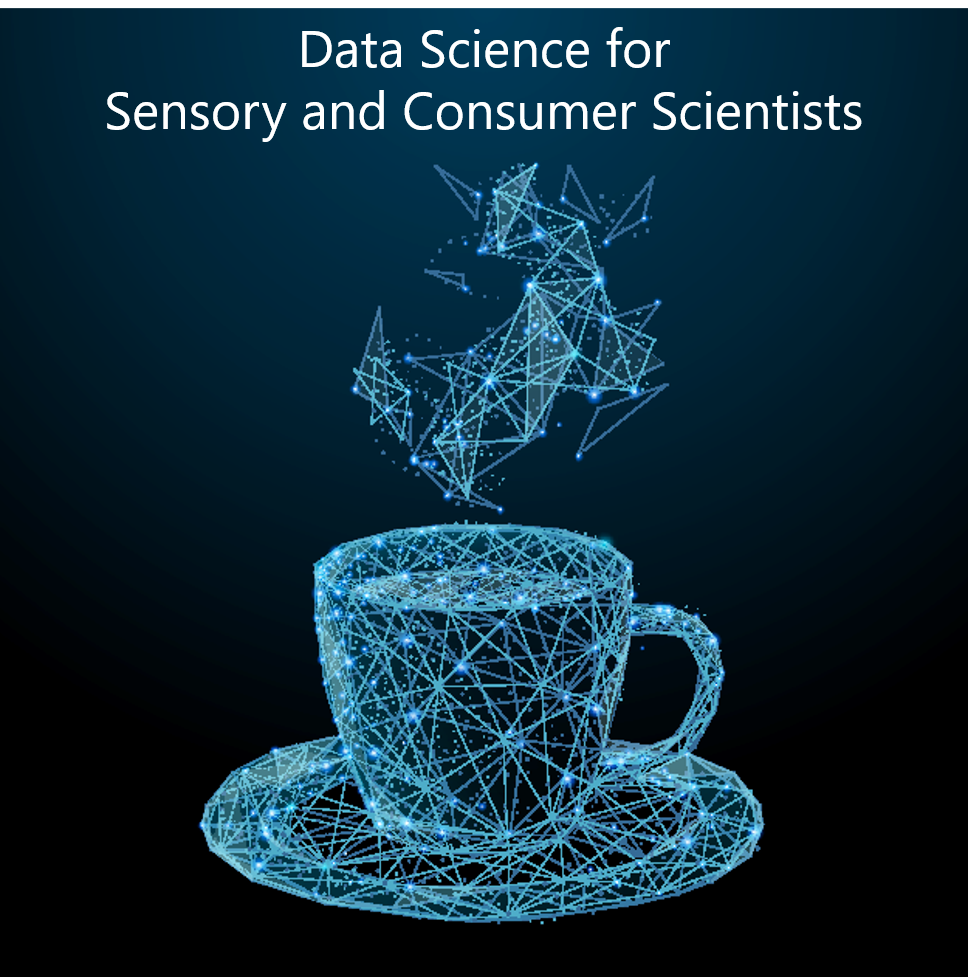

Data Science for Sensory and Consumer Scientists
2021-01-01
Bienvenue!
Welcome to the website for Data Science for Sensory and Consumer Scientists, a book in development and under contract for CRC Press.

2021-01-01
Welcome to the website for Data Science for Sensory and Consumer Scientists, a book in development and under contract for CRC Press.
